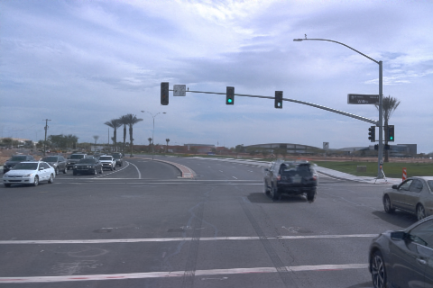
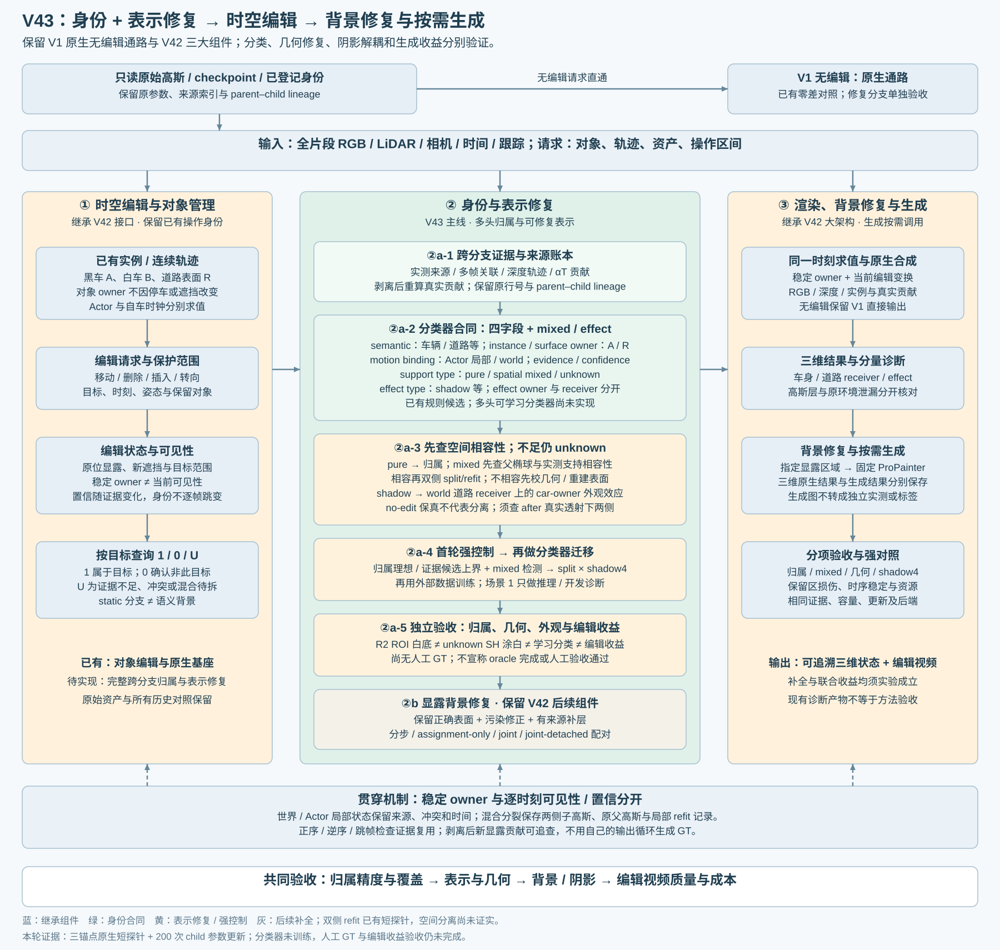

完整 static + Actor10K

打开完整原图 ↗先验证旧高斯是否覆盖目标与道路的真实支撑，再谈拆分后的稳定归属。当前双质心几何覆盖为零；仅调颜色和 opacity 后，遮挡消失时的两域匹配没有改善。
static 共918,850行，其中371,406行被49帧导出观察，547,444行缺少保存的可见贡献证据。未观察、已观察但语义弃权、跨帧冲突分别保留；R2 membership 只是历史选择。上述数字不构成分类准确率或owner真值。
默认 Actor core：本帧可见，已有类别14–19，5px轮廓带贡献比例<0.2。CPU审计 · 28个复核候选 · 轻量行证据 · CPU科学审计正文

沿用既有组件图。本轮新增的是证据与固定拆分短探针，图中既有分支不代表本轮全部重跑。
完整模型 → 仅去 Actor10K → 再去本帧 R2 static 行集。每态重新排序、计算透射率和观测矩；原环境保持不变。第三列没有局部白底替换或蓝框门控，操作与既有 R2 显示交付不同。
上：完整480×320原生PNG。下：同一PNG的CSS局部视窗；由body bbox统一扩展左24 / 上20 / 右24 / 下38px，没有另造裁片。浮点以原公式显示裁剪至[0,1]；亮色缺口不表示背景已恢复。
环境图显示实际 (1−alpha)×Env；PNG只作显示，未裁剪的RGB、alpha和原环境在NPZ中保留。
| raw | 实测双域候选 | 双质心均≤3σ | 仅target / road≤3σ | 小尾质量<1e−8 | 初始化保留父行 |
|---|---|---|---|---|---|
| 98 | 452 | 0 / 452 | 1 / 17 | 422 | 0 |
| 113 | 777 | 0 / 777 | 3 / 20 | 678 | 7 |
| 114 | 810 | 0 / 810 | 6 / 13 | 704 | 8 |
候选来自完整模型下的实测深度像素回投及 alpha×T 加权质心；它们不是两个真实表面标签。3σ计数只是描述性几何检查，阈值未调整。452 / 777 / 810条候选中，没有父高斯同时覆盖两侧观测质心，因此不能把屏幕上的双域贡献直接解释成适合沿中间面切开的空间混合。
每帧只试原排序前8个父行；数值可保留的初始化为0 / 7 / 8条父行。其双侧截断高斯矩匹配保留两侧谱系，但不保证逐像素alpha守恒、语义边界正确或编辑收益。raw98因没有安全初始化而跳过，不能填入另一帧结果。
保持父行清单、切面、子均值、协方差、旋转、尺度与高阶SH固定。只用同帧冻结原模型RGB做200步MSE蒸馏，更新子SH DC与opacity；观测mask仅用于评价，没有训练分类器。r1完成200步后在验收路径失败，r2精确恢复该检查点并补齐验收，本次更新0步，旧现场保留。
| 透射上下文 | 初始化 | 200步后 | 变化 |
|---|---|---|---|
| Actor 保留 | 0.6743 | 0.7134 | +0.0391 |
| Actor 已移除 | 0.3976 | 0.3851 | -0.0124 |
分子：target假设侧在body的贡献＋road假设侧在安全观测道路的贡献；分母：14个子高斯在这两个域的总 alpha×T。它是条件贡献比例，不是语义accuracy，也不覆盖全图。
Actor 保留时比例提高；Actor 移除、旧static支撑暴露后比例下降。这次固定几何的辐射参数优化，没有证明遮挡消失下的可分离性改善。两侧命名始终是几何假设；代码的 gt 表示切平面“大于”侧，不是ground truth。
| 上下文 | 固定观测域 | 平均通道绝对变化：前→后 | 变化>1/255像素：前→后 |
|---|---|---|---|
| Actor 保留 | 目标 body · 2,202px | 0.000755 → 0.000804 | 53 → 59 |
| Actor 保留 | 有实测深度的安全道路 · 8,913px | 0.000410 → 0.000233 | 294 → 67 |
| Actor 保留 | 查询范围外 · 137,673px | 0.000035 → 0.000029 | 49 → 7 |
| Actor 已移除 | 目标 body · 2,202px | 0.007015 → 0.007564 | 1,469 → 1,580 |
| Actor 已移除 | 有实测深度的安全道路 · 8,913px | 0.000410 → 0.000233 | 294 → 67 |
| Actor 已移除 | 查询范围外 · 137,673px | 0.000035 → 0.000029 | 49 → 7 |
这是对冻结模型的复现误差，不是对真实删除背景GT的误差。道路局部更接近教师，并不抵消Actor移除后body域的变化增大。
| Actor 已移除后，再做条件删除 | body平均RGB变化 | 实测安全道路平均RGB变化 | 道路变化>1/255像素 |
|---|---|---|---|
| 移除7个完整父高斯 | 0.048553 | 0.001358 | 869 |
| 仅移除 target 假设侧 | 0.003743 | 0.000307 | 176 |
| 仅移除 road 假设侧 | 0.044327 | 0.001049 | 649 |
相对本阶段“两侧保留”结果。这里检验路由副作用，不能把删除假设侧后的颜色变化解释为正确去车或干净道路。
保存/恢复：DC、opacity、optimizer、几何、高阶SH、四类RNG、RGB、alpha共11项通过；恢复RGB最大差0，alpha逐位相同。恢复原始JSON · 完整refit记录 · 配置与方法合同
从整行选择/改色，推进到实测双域支撑检查、双侧截断初始化、固定子几何的外观蒸馏和条件删除。7父/14子、200步、学习率与候选顺序固定；没有搜索3σ阈值、放宽尾质量门限或扩大科研范围。
原static、Actor10K与环境检查点没有写回；两个子侧均保留。分类器0步，原模型0步，shadow解决方案未执行。
49帧是已有训练时刻，三锚点不是独立未见测试集。预测语义、body、道路与阴影证据没有完整人工GT。帧状态、持久行状态、颜色冲突、双域贡献和shadow effect分别保存，缺测不记负例。
阴影应作为road receiver上的目标关联effect，保留road语义。它与目标子高斯归属分开；本轮没有用该探针声称阴影已经修复。